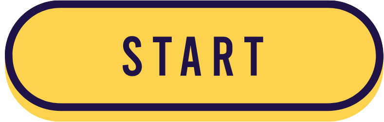

Click the "Start" button to begin using the live background removal tool. This tool is an advanced version of the website Remove.bg, which was developed by Kaleido AI. Unlike the original, this tool offers real-time processing to isolate subjects from their backgrounds during live video feeds. Developed by Kristine Galope in 2024, it provides an enhanced experience with immediate results. Make sure your camera permissions are enabled for optimal performance.
